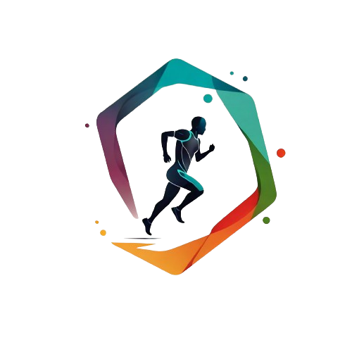

Healthy Balance

Se disputa entre dos jugadores/as (individuales) o entre dos parejas (dobles) jugando con raquetas y pelotas y consiste en golpear la pelota después de un rebote o antes que rebote con la raqueta para que vaya de un lado al otro del campo pasando por encima de la red.
El tenis es una actividad física de alta intensidad que involucra movimientos rápidos, cambios de dirección y un trabajo cardiovascular constante, lo que contribuye a un alto gasto calórico. Esto, a su vez, favorece la pérdida de grasa corporal. Entre los efectos clave
El tenis no solo es beneficioso para el cuerpo, sino que también tiene un impacto positivo en la mente. Este deporte puede mejorar la salud mental de varias maneras
El tenis tiene un impacto muy positivo en la salud del corazón y el sistema cardiovascular debido a la naturaleza dinámica del deporte, que incluye sprints, cambios rápidos de ritmo y esfuerzos prolongados. Esto conlleva varios beneficios
Lugares mas cercanos donde podes disfrutar de jugar al tenis desde lugares para aprender a canchas para jugar vos